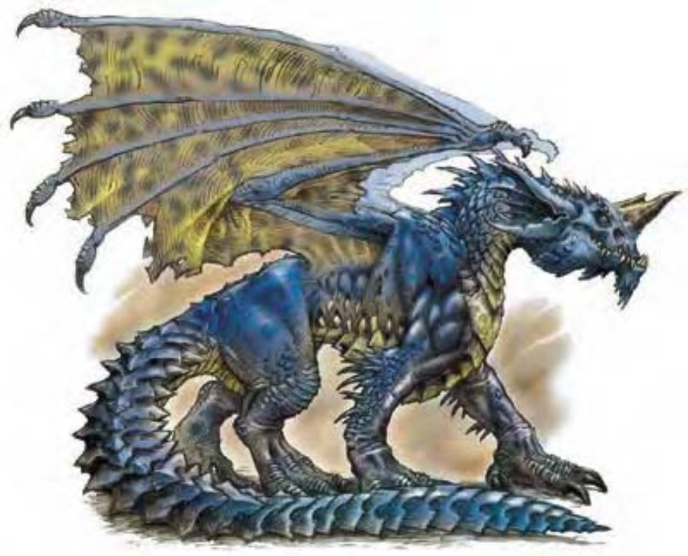

蓝龙的耳朵具有皱边，突出的鼻子上有一支巨大的角，身体周遭臭气熏天，身上淡蓝色的鳞片在阳光下闪闪发亮。
蓝龙很自负，领域观念很强。在所有龙之中最擅长钻入土中。
蓝龙鳞片的颜色从灿烂的天蓝色到深青色都有，被沙漠飞扬的沙尘磨得光滑发亮，其大小随着年龄增长而变大，厚度和硬度也提高。外皮常因静电而发出嗡嗡声或细碎的爆裂声。这种效应在蓝龙发怒或打算要攻击时会大幅增强，散发出臭氧与沙石的气味。
鲜明的体色让蓝龙在贫瘠的沙漠环境中很容易被认出。但是蓝龙经常钻入沙中，只露出头部一部分，也喜欢在炎热沙漠的空中飞翔，尤其是白天气温最高的时候。有些蓝龙的体色和沙漠天空颜色相近，成为一种优势。
蓝龙将巢穴建在大型的地底洞穴里，并将宝藏储存于此。虽然会搜集任何有价值的东西，但是最喜欢的还是宝石，尤其是蓝宝石。虽然有时候会因为太饿被迫以蛇、蜥蜴或沙漠植物为食，但最偏爱的还是像骆驼之类的家畜。只要找到机会，就会拿他们来饱餐一顿。
蓝龙的环境与社群环境：温带沙漠。
组织：雏龙、幼龙、少年龙、青少年龙和青年龙：单独或数尾 (2-5)；成年龙、壮年龙、老年龙、极老龙、古龙、上古龙或太古龙：单独、成双或一家 (1-2，加上2-5个后代)。
挑战级数：雏龙3、幼龙4、少年龙6、青少年龙8、青年龙11、成年龙14、壮年龙16、老年龙18、极老龙19、古龙21、上古龙23、太古龙25。
宝藏：三倍标准。
阵营：总是守序邪恶。
进化：雏龙7-8HD；幼龙10-11HD；少年龙13-14HD；青少年龙16-17HD；青年龙19-20HD；成年龙22-23HD；壮年龙25-26HD；老年龙28-29HD；极老龙31-32HD；古龙34-35HD；上古龙37-38HD；太古龙40+ HD。
等级修正值：雏龙+4；幼龙+4；少年龙+5；其余无。
| 资料栏位 | 壮年蓝龙 (Young Adult Blue Dragon) 超大型龙 (土系) |
| 生命骰 | 24d12+120 (276HP) |
| 先攻 | +4 |
| 速度 | 40英尺 (8格)、遁地20英尺、飞行150英尺 (不良) |
| 防御等级 | 31 (-2体型、+23天生)、接触8、措手不及31 |
| 基本攻击/擒抱 | +24 / +41 |
| 攻击 | 啮咬+31近战 (2d8+9) |
| 全力攻击 | 啮咬+31近战 (2d8+9) 及 2爪抓+29近战 (2d6+4) 及 2翼击+29近战 (1d8+4) 及 尾巴拍击+29近战 (2d6+13) |
| 占据/触及 | 15英尺 / 10英尺 (啮咬时15英尺) |
| 特殊攻击 | 喷吐攻击、碾压、威势、模仿声音、类法术能力、法术 |
| 特殊能力 | 伤害减免10/魔法、黑暗视觉120英尺、对电击/睡眠术/麻痹免疫、感官异常灵敏、法术抗力22 |
| 豁免 | 强韧+19、反射+16、意志+17 |
| 属性 | 力量29、敏捷10、体质21、智力16、感知17、魅力16 |
| 技能与专长 | 唬骗+28、专注+16、交涉+32、躲藏+11、威吓+30、神秘知识+14、自然知识+13、聆听+30、搜索+28、察言观色+28、法术辨识+30、侦察+30 专长：专攻能力 (威势)、警觉、寓守于攻、免用材料施法、空袭、盘旋、精通先攻、多重攻击、猛力攻击 |
| 环境/阵营/CR | 温带沙漠 / 总是守序邪恶 / 挑战级数：16 |
蓝龙通常会从上方攻击，或是躲在地底等待目标走到100英尺以内再发动攻击。年龄较大的蓝龙会使用特殊能力，例如“幻景”，掩饰自己并配合战术，提高突袭目标的成功率。他们视撤退为懦弱的表现，只有在身受重伤的时候才会逃离战斗。
喷吐攻击 (超自然)：蓝龙只有一种喷吐攻击，射出直线状的闪电。100英尺直线、14d8点电击伤害，通过反射检定 (DC=27) 则伤害减半。
碾压 (特异)：范围15英尺×15英尺；对小型以下的生物造成2d8+13点敲击伤害，对手若未通过反射检定 (DC=27) 则被压制。
威势 (特异)：半径210英尺、对HD23以下生物有效，通过意志检定 (DC=27) 则无效。
模仿声音 (特异)：可以随时模仿任何听过的声音，听者必须通过意志检定 (DC=25) 才不会信以为真。
造水/润水 (类法术能力)：每天3次――效果如同“造水术”，也可以用来毁水。施法者等级7、通过意志检定 (DC=25) 则无效。
其他类法术能力：每天3次――“腹语术” (成年龙或更老的龙)；每天1次――“幻景” (老年龙或更老的龙)、“迷罩” (古龙或更老的龙)、“海市蜃楼” (太古龙)。
技能：“唬骗”、“躲藏”、“法术辨识”为蓝龙的本职技能。
壮年蓝龙法术（视同七级术士）：豁免检定DC=13+法术等级。
0级――“舞光术”、“侦测魔法”、“幻音术”、“法师帮手”、“冷冻射线”、“阅读魔法”、“提升抗力”；
1级――“魔法警报”、“命令术”、“魔法飞弹”、“涅斯图伪装灵光”、“虔诚护盾”；
2级――“黑暗术”、“隐形”、“粉碎音波”；
3级――“治疗重伤”、“解除魔法”。
*亦可施展牧师法术及风、邪恶与守序领域的法术，均视为秘法术。
| 年龄层 | 体型 | 生命骰 (HP) | 力 | 敏 | 体 | 智 | 感 | 魅 | 基本攻击/擒抱 | 强韧 | 反射 | 意志 | 喷吐攻击 (DC) | 威势DC |
|---|---|---|---|---|---|---|---|---|---|---|---|---|---|---|
| 雏龙 | 小 | 6d12+6 (45) | 13 | 10 | 13 | 10 | 11 | 10 | +6/+3 | +8 | +6 | +6 | 2d8 (14) | ― |
| 幼龙 | 中 | 9d12+18 (76) | 15 | 10 | 15 | 10 | 11 | 10 | +9/+11 | +11 | +8 | +8 | 4d8 (16) | ― |
| 少年龙 | 中 | 12d12+24 (102) | 17 | 10 | 17 | 12 | 13 | 12 | +12/+15 | +15 | +10 | +10 | 6d8 (18) | ― |
| 青少年龙 | 大 | 15d12+45 (142) | 19 | 10 | 17 | 14 | 15 | 14 | +15/+23 | +17 | +12 | +12 | 8d8 (20) | ― |
| 青年龙 | 大 | 18d12+72 (189) | 21 | 10 | 19 | 14 | 15 | 14 | +18/+28 | +19 | +14 | +14 | 10d8 (23) | 19 |
| 成年龙 | 超大 | 21d12+105 (241) | 23 | 10 | 21 | 16 | 17 | 16 | +21/+37 | +21 | +16 | +16 | 12d8 (25) | 21 |
| 壮年龙 | 超大 | 24d12+120 (276) | 29 | 10 | 21 | 16 | 17 | 16 | +24/+41 | +19 | +16 | +17 | 14d8 (27) | 25 |
| 老年龙 | 超大 | 27d12+162 (337) | 31 | 10 | 23 | 18 | 19 | 18 | +27/+45 | +19 | +17 | +18 | 16d8 (29) | 27 |
| 极老龙 | 巨 | 30d12+180 (375) | 33 | 10 | 25 | 20 | 21 | 20 | +30/+49 | +22 | +19 | +21 | 18d8 (31) | 29 |
| 古龙 | 巨 | 33d12+231 (445) | 35 | 10 | 27 | 20 | 21 | 20 | +33/+57 | +23 | +20 | +22 | 20d8 (33) | 31 |
| 上古龙 | 巨 | 36d12+288 (522) | 37 | 10 | 27 | 20 | 21 | 20 | +36/+61 | +25 | +21 | +23 | 22d8 (36) | 33 |
| 太古龙 | 超巨 | 39d12+312 (565) | 39 | 10 | 27 | 22 | 23 | 22 | +39/+65 | +29 | +21 | +27 | 24d8 (37) | 35 |
| 年龄层 | 速度 | 先攻 | 防御等级 | 特殊能力 | 施法者等级 | SR |
|---|---|---|---|---|---|---|
| 雏龙 | 40英尺、遁地20英尺、飞行100英尺 (普通) | +0 | 16 (+1体型、+5天生) | 对电击免疫、“造水/润水” | ― | ― |
| 幼龙 | 40英尺、遁地20英尺、飞行150英尺 (不良) | +0 | 18 (+8天生) | 对电击免疫、“造水/润水” | ― | ― |
| 少年龙 | 40英尺、遁地20英尺、飞行150英尺 (不良) | +0 | 21 (+11天生) | 对电击免疫、“造水/润水” | ― | ― |
| 青少年龙 | 40英尺、遁地20英尺、飞行150英尺 (不良) | +0 | 23 (-1体型、+14天生) | 模仿声音 | ― | ― |
| 青年龙 | 40英尺、遁地20英尺、飞行150英尺 (不良) | +0 | 26 (-1体型、+17天生) | 伤害减免5/魔法 | 1级 | 19 |
| 成年龙 | 40英尺、遁地20英尺、飞行150英尺 (不良) | +0 | 28 (-2体型、+20天生) | “腹语术” | 3级 | 21 |
| 壮年龙 | 40英尺、遁地20英尺、飞行150英尺 (不良) | +0 | 31 (-2体型、+23天生) | 伤害减免10/魔法 | 5级 | 22 |
| 老年龙 | 40英尺、遁地20英尺、飞行150英尺 (不良) | +0 | 34 (-2体型、+26天生) | “幻景” | 7级 | 24 |
| 极老龙 | 40英尺、遁地20英尺、飞行150英尺 (不良) | +0 | 37 (-2体型、+29天生) | 伤害减免15/魔法 | 9级 | 25 |
| 古龙 | 40英尺、遁地20英尺、飞行200英尺 (笨拙) | +0 | 38 (-4体型、+32天生) | “迷罩” | 13级 | 27 |
| 上古龙 | 40英尺、遁地20英尺、飞行200英尺 (笨拙) | +0 | 41 (-4体型、+35天生) | 伤害减免20/魔法 | 15级 | 29 |
| 太古龙 | 40英尺、遁地20英尺、飞行200英尺 (笨拙) | +0 | 44 (-4体型、+38天生) | “海市蜃楼” | 17级 | 31 |